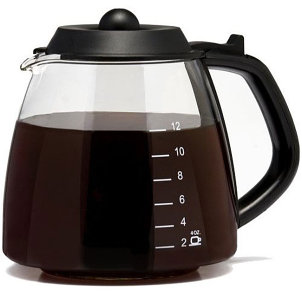
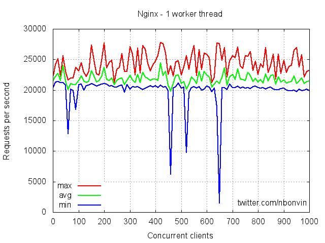
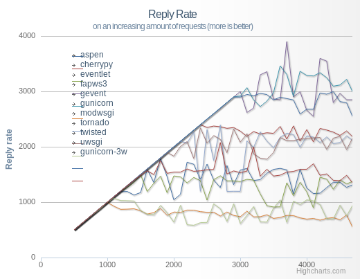
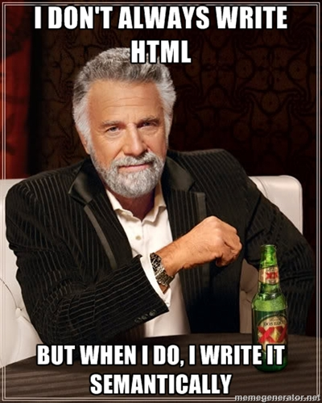

HTTP-Stateless
Table of Contents
- 1. HTTP, part duex
- 2. Announcements
- 3. Review
- 4. URL
- 5. HTTP
- 6. Protocols and State
- 7. Telephone Protocol
- 8. SSH/Terminal is Stateful
- 9. HTTP is Stateless
- 10. HTML over HTTP
- 11. Paths in HTML & HTTP
- 12. Stateless Trade-offs
- 13. Authentication
- 14. Application State
- 15. Fun with HTTP Status Codes
- 16. Static vs. Dynamic Webpage
- 17. Trade-offs
- 18. How fast?
- 19. Why should resources change?
- 20. Craigslist
- 21. Static Serving
- 22. Dynamic Serving
- 23. Requirements
- 24. What does Yelp do?
- 25. CSS and Javascript?
1 HTTP, part duex
2 Announcements
- Online class next week
- madlibs: Grades this coming week
3 Review

- Client (eg. browser) makes a request for a URL
- Connects to a web server (eg. ischool, or
app.py) using TCP/IP - Sends HTTP commands and headers
- The server associates the path with a resource
- Then sends a representation back to the client as a reply
- The client interprets the reply (eg. HTML), renders it, runs Javascript
- Repeat
3.1 Next notes
- Could connect to any web server in a data center, racks of machines
- TCP/IP covered next week: it is a way to transfer raw data
- What does an HTTP command start with? method (eg. GET POST etc)
- What's the header we used in HW? Host
4 URL
4.1 Questions notes
- URLs start with a? schema
- How to know what machine to connect to? host/server name
5 HTTP
telnet 128.32.78.16 80
GET /~jblomo/webarch2014/index.html HTTP/1.1
Host: people.ischool.berkeley.edu
HTTP/1.1 200 OK
Date: Fri, 20 Sep 2013 06:29:22 GMT
Server: Apache/2.2.22 (Fedora)
Last-Modified: Fri, 20 Sep 2013 06:28:44 GMT
ETag: "b7f00d0-a5-4e6cac83bff00"
Accept-Ranges: bytes
Content-Length: 165
Content-Type: text/html; charset=UTF-8
<!DOCTYPE html>
<html>
<head>
<title>Jim's Page</title>
</head>
<body>
<p>Hello class! This is a tiny HTML page.</p>
</body>
</html>
5.1 Questions notes
- Sends back HTML
- How does the browser organize the HTML? What kind of datastructure? DOM/tree
- Know how to write the DOM tree
- At a high level, how would we use Javascript to change the color of the paragraph text?
- Where does the Javascript run to do this?
- At a high level, how would we implement infinite scroll on this page?
- What protocol would be used to fetch more content?
6 Protocols and State
- State
- associated information
- Stateful
- Interpretation depends on history of actions
- Stateless
- Commands cannot access history
6.1 State notes
- State is information associated with some item that determines how you can interact with it
- Light switch has state: which position is it in
- Coin flips do not have state: doesn't matter what previous flips were
- We'll be talking about state at many levels: if a resource has state, if a protocol has state, building stateless protocols on stateful protocols
7 Telephone Protocol
- Bank: must identify yourself for each request
- Family: can instantly recognize you, resume conversation where it left off
7.1 Metaphor notes
- Calling a bank is generally stateless. Each time you call, must identify yourself.
- Often, even when you transfer to another dept for another question, but identify again
- If you get disconnected, can you just call right back and expect to continue?
- vs. family: can continue a conversation. Generally stateful
- What is one of the main reasons for the difference? Why is one stateful,
another not?
- who specifically you are talking to. Calling a bank could talk to any individual. Very similar
8 SSH/Terminal is Stateful
- Relative directories depend on previous
cdcommands - Interactive sessions
- Don't have to resend login information each command
9 HTTP is Stateless
- Must specify full context each request
- Absolute path
- Hostname
- Cookies*
- Current request doesn't depend on history
- Even on open connections, actual commands are stateless
9.1 Notes notes
- HTTP/1.1 keeps an open connection, but doesn't change the commands, headers, content required for the request
- When making requests for images on a page, still must ask for absolute path
- *Cookies will be covered in 2 weeks
10 HTML over HTTP
<img src="img/raptor-genie.jpg">
- Relative or absolute?
- How does the browser request this image?
10.1 Answers notes
srchas a relative path- Browser appends relative path to current URL, then makes HTTP request
- HTTP request is for the absolute path
11 Paths in HTML & HTTP
- HTTP
- Absolute paths
- HTML
- Absolute or relative paths
- Browser
- Translates relative paths with current URL + relative
11.1 Translation notes
- Browser translates relative paths in HTML to absolute paths in HTTP request
12 Stateless Trade-offs
- State requires space and coordination
- State inherent in many applications
- So it must be handled by client
- Most common: authentication
12.1 Managing State notes
- Future lecture will focus on managing state in DBs
- In general, you need multiple disks to dependably store state
- Stateless means you don't have to coordinate
- Easily scale without coordination
- Authentication: must send credentials each time, but browser mostly handles it
13 Authentication animate
- What user is making the request?
- Should the server "remember" who is making the request?
- No! Browser will always send authorization information
13.1 Where? notes
- Associate with an IP? No, what about users from the same building?
- Where should we send authentication information in a request? (for normal pages, not login form
- Headers: metadata about request, eg. who is sending it?
14 Application State
- Just because the protocol is stateless
- doesn't mean the application can't be stateful
- Information about user stored, explicitly transmitted
14.1 Databases notes
- Databases are typically used to store info, we will cover them later in class
- When looking at an individual request, we send all required information
- Just like we build styling on top of semantics (CSS on HTML), build stateful application on stateless protocol
- Like a telephone call (pre-mobile): you have to introduce yourself each time, but after introducing yourself I can remember details about you
15 Fun with HTTP Status Codes two_col
-
418 - I'm a teapot (for HyperText Coffee Pot Control Protocol)
-
420 - Enhance Your Calm (Similar to
429 Too Many Requests)

15.1 Last week notes
- (Transition)
- We talked about response codes last week, here are a couple fun ones
16 Static vs. Dynamic Webpage
- Static web pages are files that don't change
- Dynamic web pages get generated by the server
- Dynamic is an overloaded term
16.1 Dynamic notes
- Unfortunately, a few things can mean "dynamic"
- web pages (what we're talking about, generated by server)
- DHTML: basically javascript (an attempt at a buzzword. We're not talking about that right now)
17 Trade-offs
- Static pages can be read off disk quickly
- Static pages can be served out of RAM even faster
- Dynamic pages can change
- Dynamic pages may use less space
17.1 Reasons notes
- No computation needed
- RAM can "cache" frequently needed pages
- But static pages can't change (by definition)
- And static pages have to be stored with their full HTML
18 How fast?
 
- compare "Hello World"s both static & Dynamic
19 Why should resources change? animate
- Your "own" profile page
- Updates (new reviews, activity feed)
- Permissions
- External data source
19.1 Get examples notes
- Customized home page: recommendations, etc.
- New activity that you want to see. How boring would a static feed be?
- Maybe someone only recently gave you permissions to view a resource
- Getting the current weather
- Resource have state: GET request for whattimeisit.com
20 Craigslist two_col
- Every ad has a page
- Users can create and remove ads
- Ad pages have text, pictures, etc.
20.1 How to implement notes
- Case study: different ways to implement Craigslist
21 Static Serving
- Every ad uploaded generates an HTML file
- When a user requests http://craigslist.org/ad-0001.html serve the file
- CSS & Javascript also static files
21.1 Trade-offs? notes
- Very fast serving
- Simple to write, understand
- No database dependencies
- Easier to backup? Just copy files
- Less flexible: How do you change the template?
- Less normalized: how can you data-mine your ads?
- More space: repeat the Head HTML over and over
22 Dynamic Serving
- Every ad uploaded, text kept in a database
- When a user requests http://craigslist.org/ad-0001.html generate an HTML response
- Response template is like madlibs: fill in the blanks
22.1 Trade-offs notes
- Slower to serve: have to calculate response
- More complex to write: must interact with other libraries
- Database dependency: DB must be up to serve traffic
- Backup different systems: data, templates, code. How to backup DB?
- More flexible: instantly change the template
- Data separated from presentation: can mine, transform, annotate, modify data
- Less space: Just the data and the template once
23 Requirements
- The data will be frequently modified by the user
- Must serve pages as cheaply as possible
- Must be able to copy pages to another server
- Designers must iterate on site design
- Like Wikipedia, must create links to new pages in old
23.1 Advantage notes
- Dynamic
- Static
- Static
- Dynamic
- Dynamic
24 What does Yelp do? animate
- Both!
- Data stored in a database
- When users request page, generate it
- But also cache it!
- So the next time, it can be served like a file*
24.1 Caching notes
- We'll discuss caching in another lecture
- Caches are not exactly HTML files on disk
- Usually stored in RAM
25 CSS and Javascript?
- Still static
- Fairly rare that those assets are dynamically generated
- Exception: some images
25.1 HTML

25.2 Systems
25.3 Philosoraptor